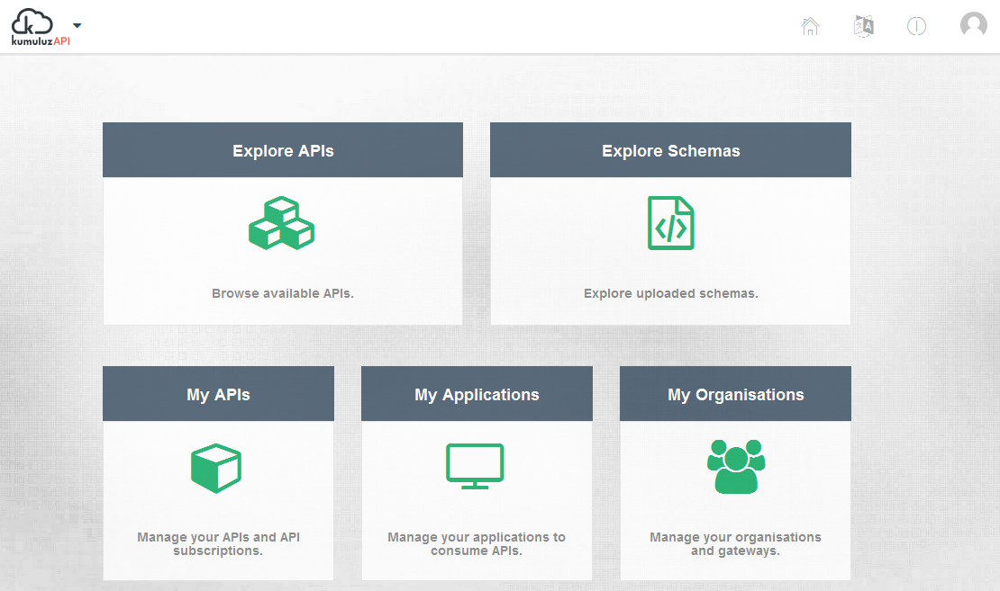
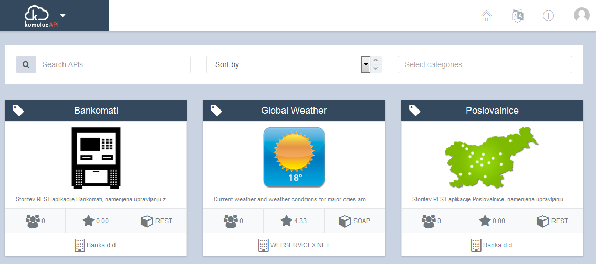
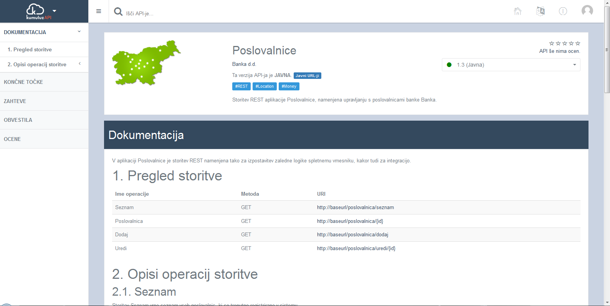
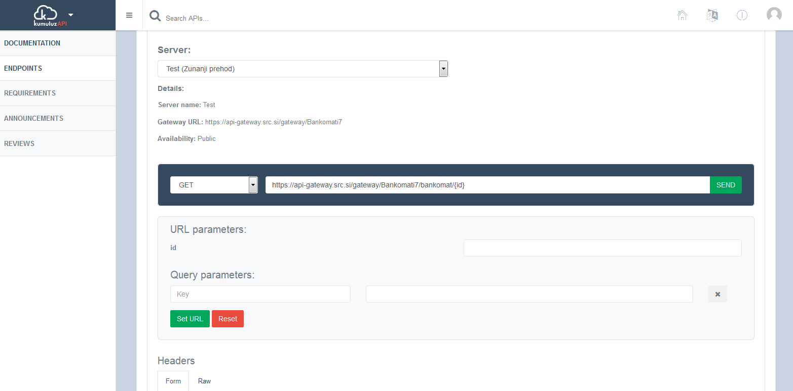

API Management and Marketplace solution – expose, manage and control your APIs
KumuluzAPI is a lightweight, open, standards-based solution for API Management, API Catalogue, API Gateway, API Marketplace with complete support for cataloguing API-related schemas, such as XML Schemas and JSON documents, providing full insight into APIs, their usage, relations, schemes and dependencies.
KumuluzAPI is an enterprise-grade solution. It is based on microservice architecture with full elasticity, scalability and high-availability. Its functionalities are exposed through APIs and GUI (HTML5 responsive design). The KumuluzAPI solution is built to integrate with various backend systems, such as ESB, SOA, BPM, different development environments, DevOps (Continuous Integration and Delivery), etc.
The product provides support for multiple languages. Currently full support for English and Slovenian is provided. Multiple language support might be important for digitalization within the country and region.
Features and Capabilities:
• Create a catalogue of services and their APIs for REST and SOAP
• Automatically discover APIs and services and populate the catalogue without manual intervention – have your API catalogue always in-sync with the actual environment
• Provide visibility into all APIs, regardless of source, through a centralized catalog for APIs
• Integrate with DevOps and Continuous integration/delivery
• Document your APIs in a standard, language and technology independent way
• Include APIs from different environments (production, UAT, test, development, etc.)
• Search, filter, test APIs and service
• Full versioning support for APIs on different environments and simultaneous version support
• Complete lifecycle management of APIs
• Synchronous, asynchronous, messaging and streaming API support
• Convert between technologies (REST, SOAP, EJB, etc.)
• Full support for microservices and integration with KumuluzEE
• Dependency analysis and visualization for APIs, applications and schemas
• Included schema (XSD/JSON) support for searching and viewing schemas used in APIs, including dependency analysis in visualization
• Multiple plans, SLA, QoS, rate limiting and monetization options
• SLA monitoring and real-time compliance
• API access approval workflows
• Multiple gateways support with full security, rate-limiting and authentication support through multiple providers (such as LDAP, OAuth2, Kerberos, etc.)
• Metrics, QoS and SLA monitoring
• API and service health monitoring
• Support for application servers, virtualized environments, PaaS and Docker-style environments
Figures below show the main screens of the KumuluzAPI:

Figure: Landing-page for the KumuluzAPI

Figure: API Catalogue in KumuluzAPI
KumuluzAPI addresses the following aspects of API Management:
• Complete and comprehensive solution for API Management,
• API Catalog for cataloging, documenting and publishing APIs to different target groups (such as internal, external, public, private and other users),
• API Gateway for managing, controlling and securing APIs
• API Marketplace for monetizing APIs using different policies,
• Schema management for managing XML and JSON schemas.
KumuluzAPI solution provides support for the following types of APIs and services:
• REST services
• SOAP services
Furthermore, KumuluzAPI provides full support for management of XML Schema (XSD) and JSON schemas for APIs and services, which enables setting up a catalog of schemas, inspect their usage in APIs, relations and dependencies and fully document them, improving the understanding, quality and reuse of data types and schemas.
KumuluzAPI provides a flexible and configurable way for documenting APIs. Basic documentation is auto-generated out of WSDL for SOAP services and Swagger or RAML for REST services. Furthermore, the API solution provides a complete solution for documenting APIs in standardized and conformant way, including full documentation, dependencies, UML diagrams, BPMN diagrams and other means of documentation. It also provides full support for Markdown.
API Catalog provides innovative means for registering APIs in the catalog with full integration with development tools, possibility to harvest APIs in run-time on application server or ESB, and the ability to automatically register APIs through the DevOps process of building solutions. The above-described approaches guarantee that the API Catalog is always in-sync with the actual environments. Support for multiple environments, such as development, test, staging, UAT, production, etc. is provided out of the box.
API Gateway is a standards-based, policy-driven solution for exposing APIs to different target groups, such as internal users, external users, public access, partners, etc. It is fully integrated with SOA environment. It enables to apply security, reliability, QoS and SLA policies to APIs, control and monitor them and prepare reports and real-time alarms regarding SLA compliance.
API Marketplace enables monetization of APIs, which is usually important in the digitalization and digital transformation efforts and provides various means for monetization, such as flat-rates, subscription, charging per-request or per-data-volume, time-related charging, etc. Different monetization policies can be applied for different user groups.
API Configuration, Documentation, and Publishing
APIs can be configured either manually through the user interface, programmatically through APIs exposed by KumuluzAPI, or automatically. Automatic configuration can be done in two different ways:
• APIs are configured at build-time, or at deploy-time with tight integration with DevOps. At build-time, direct integration with Jenkins and Maven enables that APIs are configured, documented and registered automatically as a part of the build cycle. At deploy-time, APIs are configured, documented and registered as a part of deploy procedure, utilizing tight integration with Nexus repository of artefacts.
• APIs can be configured by harvesting the environment, such as ESB, BPM, existing applications (including legacy and mainframe), application servers, etc.
The documentation of APIs can be either entered manually through UI or automatically integrated. Basic documentation is auto-generated out of WSDL for SOAP services and Swagger or RAML for REST services. Furthermore, the API solution provides a complete solution for documenting APIs in standardized and conformant way, including full documentation, dependencies, UML diagrams, BPMN diagrams and other means of documentation. It also provides full support for Markdown.

API publishing is supported via API gateways. This enables easy and straightforward publishing of APIs for different target user groups. Each API can be published on for one or more organizations and on one or more gateways. For example, gateways are configured for internal users, partners and external users. Each API can be published on one or more gateways. For each gateway, security, authentication, rate limiting, SLA and other parameters can be individually configured.

Security and authentication are supported as follows:
• REST services can be secured using SSL/TLS, for authentication OAuth, basic HTTP, SAML, custom security headers and nounces are supported. Authentication provider can be one or more external providers, such as LDAP, Oauth2, Kerberos, etc.
• SOAP service can be secured using WS-Security. Username, X.509 and SAML profiles are supported. Also basic HTTP and SSL/TLS is supported.
For each endpoint, full endpoint validation can be enabled. Endpoint translation from gateway to server (virtual endpoint resolution) is automatic.
Identity Providers
KumuluzAPI can be integrated with one or more external identity providers. Any LDAP or OAuth2 or SAML compliant external identity providers are supported (including Google and Facebook).
KumuluzAPI can be integrated with one or more internal identity providers, such as LDAP (including Active Directory), OAuth and Oauth2, SAML, etc. Custom identity providers (such as authentication upon users in a database table) are supported as well.
SLA
KumuluzAPI provides full QoS and SLA control. This includes request throttling, which is rule based and can be flexibly configured. Examples include throttling based on number of requests in a specific time period, data volume in specific time period, number of users. Also, more advanced rule based throttling is supported. All throttling is related to usage plan. Each API can have one or more usage plans.
Fully automatic inbound and outbound SOAP/REST and XSD/JSON transformations are supported and can be configured for each gateway.
KumuluzAPI provides full real-time monitoring of SLA parameters and their compliance for each service.
Request/Response Logging and Diagnostics
All request and responses over gateways are logged and full history and audit trail of requests and responses is available. Reports can be generated.
Full API diagnostic is available. Active API monitoring is performed in user-configurable intervals (such as every 5 minutes). Active service health is performed and real-time diagnostics, monitoring and alarm notifications are supported.
Monitoring
Real-time monitoring of API health, response times, requests, API clients, gateway performance and scalability and other parameters are supported.
Full support for specifying SLA requirements for each API are provided with real-time monitoring of SLA compliance and alarms when SLA parameters are not meet.
Analytics
Analytics on API usage, client requests, responses, geolocation of requests, responses, etc. is provided. Reposts can be generated. Furthermore, all data can be exported into a Big Data/Analytics tool for further analysis.
API Discovery
API discovery is supported either through API Catalog or in programmatic way using ZooKeeper as a centralized service for maintaining configuration information, naming, providing distributed synchronization, and providing group services.